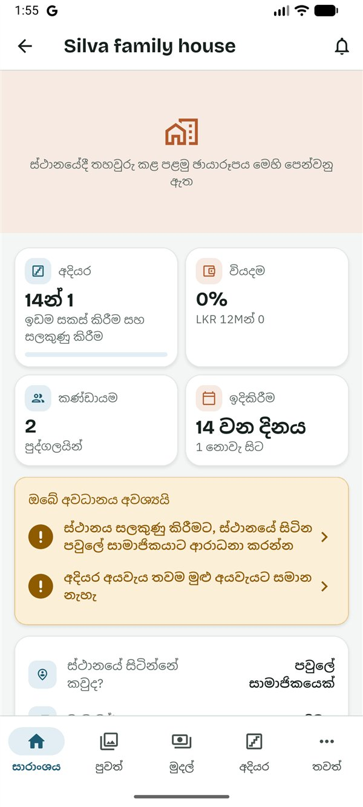
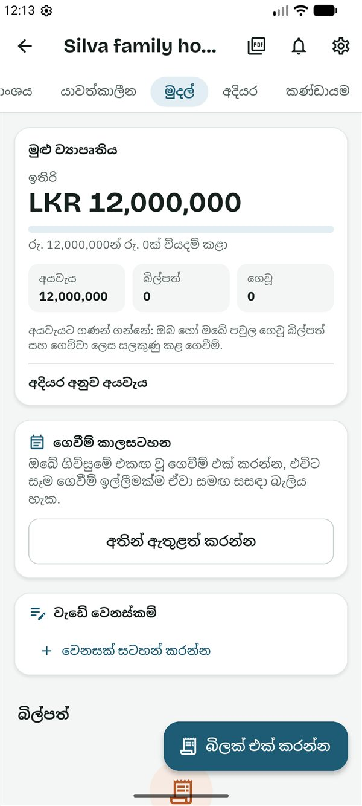

SiteProof
SiteProofමෙම සිංහල පාඨය කෙටුම්පතකි. යෙදුමේ සිංහල මෙන්ම, සිංහල මව් භාෂාව වන කෙනෙකු එය තවම සමාලෝචනය කර නැත.
This Sinhala text is a draft awaiting review by a native speaker, like the app's Sinhala.
මාර්ගෝපදේශ › සම-හිමිකරු
සම-හිමිකරුවන් සඳහා මාර්ගෝපදේශය
Read in English (ඉංග්රීසියෙන් කියවන්න)
මෙම මාර්ගෝපදේශය සම-හිමිකරුවෙකු සඳහායි: ව්යාපෘතිය කළමනාකරණයට හිමිකරුට උදව් කරන කෙනෙක්, උදාහරණයක් ලෙස සැමියා හෝ බිරිඳ, නැතහොත් සහෝදරයෙක් හෝ සහෝදරියක්. හිමිකරු මෙන්ම ඔබ සියල්ල දකියි, ගෙවීම් අනුමත කරයි, අයට ආරාධනා කරයි. හිමිකරුට පමණක් ඉතිරි වන්නේ කරුණු දෙකකි: ව්යාපෘතිය භාර දීම සහ සැලැස්මට ගෙවීම.
ඔබට කළ හැකි සහ කළ නොහැකි දේ
ඔබට කළ හැකි දේ
- සියල්ල බැලීම: යාවත්කාලීන සහ ඡායාරූප, අයවැය, සියලු බිල්පත් සහ ගෙවීම් ඉල්ලීම්, ගෙවීම් කාලසටහන, වැඩේ වෙනස්කම්, සැලසුම් සහ ලිපිගොනු.
- ගෙවීම් ඉල්ලීමක් අනුමත කිරීම, ඒ ගැන ප්රශ්නයක් ඇසීම හෝ ප්රතික්ෂේප කිරීම, සහ එය ගෙව්වා ලෙස සලකුණු කිරීම.
- සජීවී පරීක්ෂාවක් ඉල්ලීම.
- ව්යාපෘතිය, එහි අදියර සහ අයවැය වෙනස් කිරීම, සහ අදියර ආරම්භ කිරීම හා අවසන් කිරීම.
- ගෙවීම් කාලසටහන සැකසීම (Plus), සහ වැඩේ වෙනස්කම් අනුමත කිරීම හෝ පිළිනොගැනීම (Plus).
- වැඩබිමේදී අදියරක් පරීක්ෂා කර අනුමත කිරීම.
- යාවත්කාලීන දැමීම, බිල්පත් එක් කිරීම, සැලසුම් සහ ලිපිගොනු එක් කිරීම, සහ ඕනෑම ලිපිගොනුවක් ඉවත් කිරීම.
- අයට ආරාධනා කිරීම සහ ඉවත් කිරීම (හිමිකරු හැර).
ඔබට කළ නොහැකි දේ
- ව්යාපෘතිය වෙනත් කෙනෙකුට භාර දීම: එය කළ හැක්කේ හිමිකරුට පමණි.
- සැලැස්ම තෝරීම හෝ එයට ගෙවීම: ගෙවන්නේ හිමිකරු පමණි.
- ගෙවීමක් ඉල්ලීම: ඉල්ලන්නේ ස්ථානයේ සිටින පවුලේ සාමාජිකයා හෝ කොන්ත්රාත්කරුයි.
- නව සැලසුමක් දුටු බව තහවුරු කිරීම, හෝ මිල ගණනකින් අදියර යෝජනා කිරීම: ඒවා ඉදිකරන්නන්ගේ සහ නිර්මාණකරුගේ කාර්යයි.
- ස්ථානය සලකුණු කිරීම, හිමිකරු ස්ථානයේ සිටින්නේ කවුද? සඳහා මම තෝරා ඇත්නම් මිස.
ආරම්භ කිරීම
- හිමිකරු ඔබට ආරාධනා කරයි. ඔබට සිංහලෙන් සහ ඉංග්රීසියෙන් පණිවිඩයක්, සාමාන්යයෙන් WhatsApp හරහා, අක්ෂර 6ක කේතයක් සමඟ ලැබේ. කේතය එක් වරක් පමණක්, දින 7ක් වලංගුයි.
- Google Play වෙතින් SiteProof ස්ථාපනය කරන්න. SiteProof පරීක්ෂා කරන කාලය තුළ, එය ස්ථාපනය කළ හැක්කේ ආරාධනා ලැබූ පරීක්ෂකයින්ට පමණි. දැනට එය Android දුරකථන සඳහා පමණි.
- සිංහල හෝ English තෝරා, කෙටි හැඳින්වීම කියවන්න හෝ මඟ හරින්න ඔබන්න.
- ඇතුළු වන්න: ඔබේ ඊමේල් ලිපිනය ටයිප් කර කේතය යවන්න ඔබා, ඊමේල් එකේ ඇති ඉලක්කම් 6ක කේතය ටයිප් කර තහවුරු කරන්න ඔබන්න. නැතහොත් Google සමඟ ඉදිරියට යන්න ඔබන්න. මුරපදයක් නැත.
- ඔබ ගැන යටතේ ඔබේ නම සහ ඔබ ජීවත් වන රට පුරවා ඉදිරියට ඔබන්න.
- මුල් තිරයේ ⋮ → කේතයකින් එක්වන්න ඔබන්න. කේතය ටයිප් කර කේතය පරීක්ෂා කරන්න ඔබන්න. ඔබට ආරාධනා කළේ කවුද සහ ඔබේ භූමිකාව යෙදුම පෙන්වයි. මෙම ව්යාපෘතියට එක්වන්න ඔබන්න.
ව්යාපෘතිය ඔබේ මුල් තිරයේ, එහි කාඩ්පතේ "සම-හිමිකරු" ලෙස පෙන්වයි; ඔබට වෙනත් භූමිකා වලින් ව්යාපෘති ද ඇත්නම් එය ඔබේ නිවාස යටතේ ඇත. එය සාරාංශය ටැබයෙන් විවෘත වේ.
ඉදිකිරීම බලා සිටීම
- සාරාංශය තුළ ස්ථානයේදී තහවුරු වූ නවතම ඡායාරූපය, ඔබේ සතිය (Plus: සෑම සඳුදාම ඔබේ වේලා කලාපයේ උදේ 7ට පසුගිය සතියේ සාරාංශයක්, ව්යාපෘතියේ වාර්තා වලින් AI මගින් ලියා, සෑම අංකයක්ම පරීක්ෂා කර), අදියර, වියදම, කණ්ඩායම සහ ඉදිකිරීම කොටු, සහ ඔබේ අවධානය අවශ්යයි පෙන්වයි.
- ඔබේ අවධානය අවශ්යයි යටතේ ඔබ හෝ හිමිකරු වෙනුවෙන් රැඳී ඇති දේ ඇත: ගෙවීම් ඉල්ලීම්, වැඩේ වෙනස්කම්, තහවුරු කළ යුතු ස්ථානයක්, සලකා බැලිය යුතු අදියර සැලැස්මක්. එතැනට යාමට පේළියක් ඔබන්න.
- යාවත්කාලීන තුළ සියලු යාවත්කාලීන, නවතම ඒවා මුලින්, සෑම ඡායාරූපයකම ලාංඡනයක් සමඟ ඇත: ස්ථානයේදී තහවුරු විය, අනතුරු ඇඟවීම හෝ සලකුණු කළා. හේතුව බැලීමට ලාංඡනය ඔබා, ඉන්පසු මෙහි තේරුම කුමක්ද? ඔබන්න.
- ඔබ බැලූ බව වැඩබිමේ සිටින තැනැත්තා දැනගන්නට යාවත්කාලීනයක දැක්කා 👍 ඔබන්න. එම ස්ථානයේම සිට පෙර ගත් ඡායාරූපය අසල එය බැලීමට ඡායාරූපයක් ඔබා සසඳන්න ඔබන්න.
- දැන්ම වැඩේ බැලීමට, යාවත්කාලීන තුළ සජීවී පරීක්ෂාවක් ඉල්ලන්න ඔබන්න: ඡායාරූප ගන්නේ කවුද, පෙන්විය යුත්තේ කුමක්ද සහ කවදාට (පැය 1ක් ඇතුළත, පැය 3ක් ඇතුළත හෝ ශ්රී ලංකා වේලාවෙන් ප.ව. 6:30ට පෙර) තෝරා දැන් ඉල්ලන්න ඔබන්න. විශාල ගෙවීමකට පෙර කඩදාසියක කේතයක් ද ඉල්ලන්න තෝරන්න.


ගෙවීම් ඉල්ලීමක් ගැන තීරණය කිරීම
සෑම ගෙවීමක් ගැනම තීරණය කරන්නේ ඔබ හෝ හිමිකරුයි. ඔබෙන් කෙනෙකු තීරණය කළ පසු, අනෙකාට ඉල්ලීම වැසේ. SiteProof මුදල් යවන්නේ නැත: ඔබ ඔබේ බැංකුව හරහා ගෙවා, ඉන්පසු එය සටහන් කරයි.
- දැනුම්දීමෙන්, ඔබේ අවධානය අවශ්යයි තුළින් හෝ මුදල් තුළින් ඉල්ලීම විවෘත කරන්න.
- මුදල් කොටුව කියවන්න: අදියර අයවැය, මෙම අදියරට දැනටමත් ගෙවූ, මෙම ඉල්ලීම සහ මෙයින් පසු ඉතිරි, සහ අදියරේ වෙනත් ඉල්ලීම් රැඳී ඇති විට සියල්ල අනුමත කළහොත් ඉතිරි. කාලසටහනේ එකඟ වූ ගෙවීමක් නම්, එය ගිවිසුම සහ මෙම ඉල්ලීම එකඟ වූ මුදල ඉක්මවයිද යන්න පෙන්වයි.
- තීරණය කිරීමට පෙර (Plus) කියවන්න: ව්යාපෘතියේ වාර්තා වලින් AI මගින් ලියූ කෙටි පරීක්ෂාවක්, ඇසීමට වටින යටතේ ප්රශ්න සමඟ. ප්රශ්නයක් ඇසීමට එය ඔබන්න. එය ඔබ වෙනුවෙන් තීරණය නොකරයි.
- සාක්ෂි ලෙස ඡායාරූප සහ ඒවායේ ලාංඡන, සහ අදියර පරීක්ෂා පේළිය බලන්න.
- අනුමත කරන්න, ප්රශ්නයක් අහන්න හෝ ප්රතික්ෂේප කරන්න (හේතුවක් අවශ්යයි) ඔබන්න.
- බැංකුව හරහා මුදල් යැවූ පසු, ඉල්ලීම විවෘත කර ගෙව්වා ලෙස සලකුණු කරන්න ඔබා, බැංකු යොමු අංකය, ස්ලිප් එකේ ඡායාරූපය හෝ දෙකම එක් කරන්න.

මුදල්, අදියර සහ කණ්ඩායම
මේවා හිමිකරුට මෙන්ම ක්රියා කරයි. පියවර හිමිකරුගේ මාර්ගෝපදේශයේ ඇත.
- මුදල්: මුලින් ගෙවීම් ඉල්ලීම්, ඉන්පසු අයවැය (ගෙවීම් කාලසටහනක් ඇති විට කොටස් දෙකකින් ඔබේ අයවැය), ගෙවීම් කාලසටහන, වැඩේ වෙනස්කම්, ප්රස්ථාර සහ බිල්පත්. බිලක් ගැන ඇසීමට: එය විවෘත කර ⋮ → මෙම බිල විමසන්න. මුදල් බලන්න.
- ගෙවීම් කාලසටහන (Plus): ගිවිසුමෙන් කියවන්න හෝ අතින් ඇතුළත් කරන්න, සෑම ගෙවීමක්ම පරීක්ෂා කර, ඉන්පසු කාලසටහන සුරකින්න.
- වැඩේ වෙනස්කම් (Plus): රැඳී ඇති වෙනසක් විවෘත කර අනුමත කරන්න, ප්රශ්නයක් අහන්න හෝ පිළිනොගන්න ඔබන්න. ඔබම සටහන් කරන වෙනසක් වහාම අනුමත වේ.
- අදියර: අදියර ආරම්භ කිරීම හා අවසන් කිරීම, ඒවා වෙනස් කිරීම, මගේ අයවැය බෙදන්න, අදියර දින සැලසුම් කරන්න, අදියර යෝජනාවක් සලකා බැලීම, සහ අදියරක් පරීක්ෂා කිරීම (මෙම අදියර පරීක්ෂා කරන්න). අදියර සහ අදියර පරීක්ෂා බලන්න.
- කණ්ඩායම: කෙනෙකුට ආරාධනා කරන්න, භූමිකාව තෝරා, WhatsApp හරහා සාදා බෙදාගන්න. පෙන්වන නම වෙනස් කරන්න හෝ ව්යාපෘතියෙන් ඉවත් කරන්න සඳහා තැනැත්තෙකු ඔබන්න. ඔබේ කණ්ඩායම බලන්න.
- ස්ථානය: වැඩබිමේ සිටින තැනැත්තා ස්ථානය සලකුණු කළ පසු, Google Maps හි බලන්න මගින් එය පරීක්ෂා කර ස්ථානය තහවුරු කරන්න ඔබන්න.
- වාර්තා (Plus): ව්යාපෘතියේ ඉහළින් ඇති PDF අයිකනය.

දැනගත යුතු දේ
කවුද මොනවා දකින්නේ
- ඔබේ සතිය සහ තීරණය කිරීමට පෙර ඇතුළුව, හිමිකරු දකින දේ ඔබට පෙනේ. ගෙවීම ඉල්ලූ තැනැත්තාට එම පරීක්ෂාව කිසිවිටෙක නොපෙනේ.
- කොන්ත්රාත්කරුට පෙනෙන්නේ ඔහුගේම බිල්පත් සහ ඉල්ලීම් පමණි, කිසිවිටෙක අයවැය නොවේ. නිර්මාණකරුට අයවැය පෙනෙන්නේ හිමිකරු ඉඩ දුන්නොත් පමණි. බලන්නන්ට කිසිවිටෙක මුදල් නොපෙනේ.
- ඡායාරූප, ස්ථානය, අදියර, අදියර පරීක්ෂා, අදහස් සහ ලිපිගොනු කණ්ඩායමේ සැමට පෙනේ. බලන්නන්ට ගිවිසුම නොපෙනේ.
- එකිනෙකාගේ නම සහ භූමිකාව, සහ දුරකථන අංකයෙන් ඇතුළු වූ අයගේ අංකය, කණ්ඩායමේ අයට පෙනේ.
ඡායාරූප ලාංඡන
- ස්ථානයේදී තහවුරු විය: SiteProof කැමරාවෙන්, ස්ථානයේ කවය තුළ (සාමාන්යයෙන් මීටර් 150) ගෙන, ඉක්මනින් උඩුගත කළා.
- අනතුරු ඇඟවීම: යමක් සම්පූර්ණයෙන් පරීක්ෂා කළ නොහැකි විය, උදාහරණයක් ලෙස ස්ථානය තවම තහවුරු කර නැත, GPS දුර්වලයි, ඡායාරූපය කවයෙන් ටිකක් පිටතින් ගත්තා, පමා වී උඩුගත වුණා, පෙර ඡායාරූපයකට සමානව පෙනේ, හෝ (Plus) තිරයක හෝ මුද්රිත පිටපතක ඡායාරූපයක් විය හැකියි.
- සලකුණු කළා: වැඩබිමෙන් ඈතින්, ව්යාජ ස්ථානයක් සමඟ ගත්තා, එම ඡායාරූපයම පෙර පළ කර ඇත, හෝ වෙනත් ව්යාපෘතියක ඡායාරූපයකට සමානව පෙනේ.
ලාංඡනවලට වැඩේ ගුණාත්මකභාවය ඔප්පු කළ නොහැක. වැදගත් අදියර සඳහා නව ඡායාරූපයක් ඉල්ලන්න හෝ ගොස් බලන්න.
SiteProof Plus
ගෙවන්නේ හිමිකරු පමණි; ඔබට කිසිවිටෙක මිලක් නොපෙනේ. SiteProof පරීක්ෂා කරන කාලය තුළ, සෑම ව්යාපෘතියකටම Plus නොමිලේ. Plus සඳහා ගෙවීම ආරම්භ වූ පසු, මෙම මාර්ගෝපදේශයේ (Plus) ලෙස සලකුණු කළ දේවලට හිමිකරුගේ Plus සැලැස්ම අවශ්යයි.
හිමිකරු ව්යාපෘතිය ඔබට භාර දුන්නොත්
හිමිකරුට ඔබව හිමිකරු කළ හැක (කණ්ඩායම → ඔබ → හිමිකරු කරන්න). ඔබට වහාම දැනුම් දෙන අතර, පැරණි හිමිකරු සම-හිමිකරුවෙකු වේ. එතැන් සිට හිමිකරුගේ මාර්ගෝපදේශය ඔබට අදාළයි.
ව්යාපෘතියකින් ඉවත් වීම
ඔබව ඉවත් කරන ලෙස හිමිකරුගෙන් ඉල්ලන්න, නැතහොත් සැකසුම් → මගේ ගිණුම මකන්න මගින් ඔබේ ගිණුම මකන්න. ඔබ එක් කළ දේ ව්යාපෘතියේ ඉතිරි වන අතර, "හිටපු සාමාජිකයෙක්" ලෙස පෙන්වයි. ගිණුම මකන්න (ඉංග්රීසියෙන්) බලන්න.